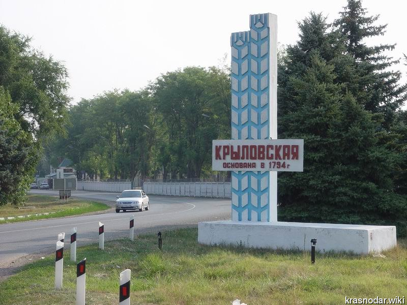
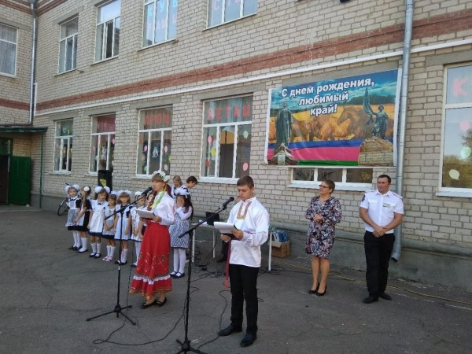
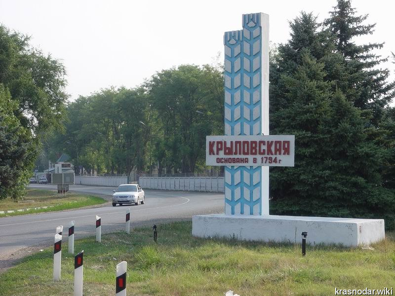
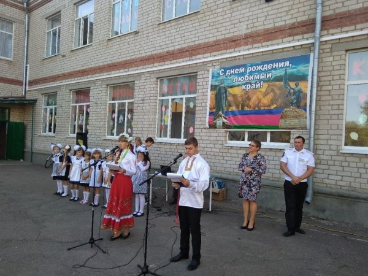

Крыловский район — муниципальное образование в составе Краснодарского края. Административный центр — станица Крыловская.

Моя школа

Дом культуры

О месте где я жила
Крыловский район — муниципальное образование в составе Краснодарского края. Административный центр — станица Крыловская.

Моя школа

Дом культуры